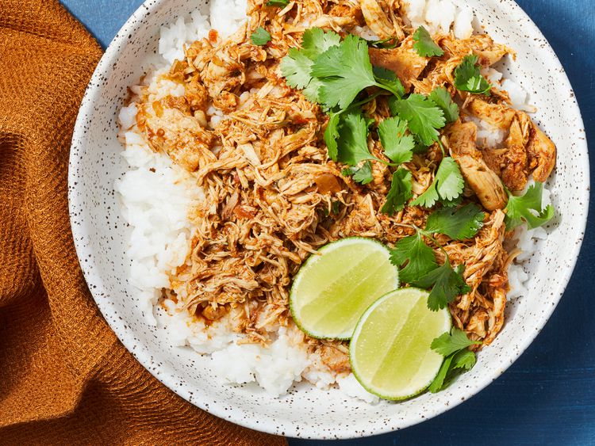

Limed Chicken

This slow cooker cilantro-lime chicken is bursting with flavor. Try it in tacos for a nice change from plain chicken.
- 1 (16 ounce) jar salsa
- 1 (1.25 ounce) package dry taco seasoning mix
- 1 medium lime, juiced
- 3 tablespoons chopped fresh cilantro
- 3 pounds skinless, boneless chicken thighs
- Step1 Gather all ingredients. really important
- Step2 || Stir salsa, taco seasoning, lime juice, and cilantro together in a slow cooker until well combined. Add chicken and spoon salsa mixture over top to coat.
- Step3 || Cover and cook until chicken is no longer pink in the center and the juices run clear, on Low for 6 to 8 hours or High for 4 hours. An instant-read thermometer inserted into the center should read at least 165 degrees F (74 degrees C).
- Step4 || Shred chicken in the crock with two forks, then mix with the sauce.
- step5 || Enjoy! really important
home
back to home for more recipes